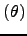
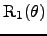
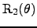

Next: The relaxation equations - Up: Theory Previous: The chi-squared function - Contents Index
The chi-squared equation is itself dependent on the relaxation equations through the back-calculated relaxation data R
. Letting the relaxation values of the set R
be the

,

, and NOE
an additional layer of abstraction can be used to simplify the calculation of the gradients and Hessians. This involves decomposing the NOE equation into the cross relaxation rate constant
 and the auto relaxation rate
. Taking equation (
and the auto relaxation rate
. Taking equation ( ) below the transformed relaxation equations are
) below the transformed relaxation equations are
whereas the relaxation equations are the
,
,
 .
.
Edward d'Auvergne 2007-10-21